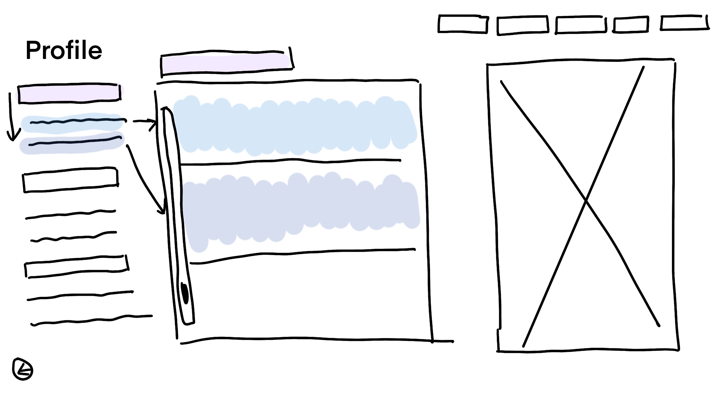
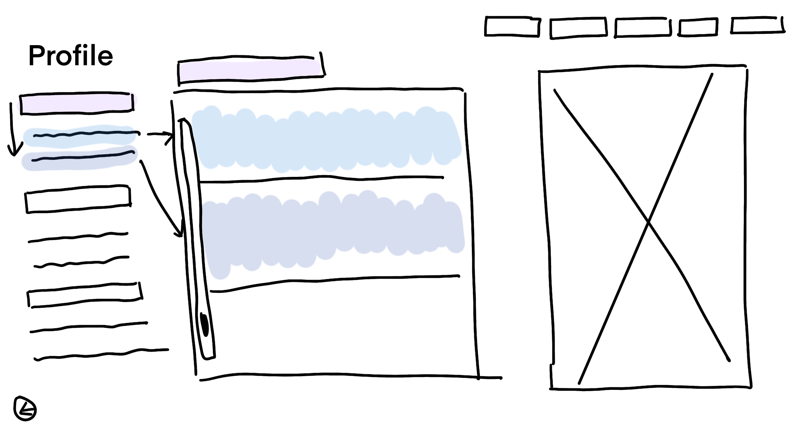

Blog 2
Reflection on Readings
The 2003 book "You Say You Want a Revolution?" by Stuart Moulthrop examines how hypertext was intended to alter how we communicate, write, and read. He questions if hypertext has actually brought forth a revolution or if it has only produced a new kind of control by applying Marshall McLuhan's media theory. Hypertext was first envisioned as a democratic, open system that permitted users to freely interact and produce information. But Moulthrop contends that rather than a digital haven we were left with corporately run websites like Google, Facebook, and Amazon. These businesses control what information is displayed, influencing what individuals read and think.
In his discussion on surveillance, Moulthrop makes the prediction that hypertext might be used as a tool for user tracking. Large volumes of data are being gathered by businesses and governments from internet purchases, social media, and search engines. "Do you accept these cookies?”. The internet frequently serves to uphold established power systems rather than to empower individuals. For instance, social media algorithms restrict true freedom of expression by promoting some information while concealing others.
The fact that media revolutions frequently reproduce the past is another important argument. Before it was taken over by large corporations, television appeared to be a democratic medium. Similar circumstances applied to the internet, which began as an open platform in the 1990s but is currently controlled by a small number of strong corporations. The basic idea of hypertext is still being pursued, nevertheless, by certain initiatives like Wikipedia and open-source initiatives.
Moulthrop's essay serves as a reminder that a revolution cannot be sparked by technology alone. The way people utilise and manage digital tools determines real change. He encourages us to consider whether we have already lost control or whether we can still fight for an open internet. His theories are still very applicable as we traverse the online world of today, when knowledge and power are more intertwined than ever.
Folder Structure and URL Scheme
First Wireframe Ideas

 


Homepage: This will have an overview of all the elements that will be included into the website. This includes a wireframe design that will be able to to display previews of each folder.
Blog Posts: This page will include all the blogposts that we've done in the semester. There will be a scroll menu on the left hand side that can easily direct you to the blog post of your choice. There will also be two buttons at the bottom that will lead you to the previous or next page. This will be included for all pages except the homepage.
Portfolio: My portfolio page will include all the work that displays my skill as an artist. It will also include any and all sketches of storyboards and official campaign storyboards I've done over the years.
Profile: My profile will include my name and surname, interests, education, qualifications and skillsets. This will also include any contact information that would be important for future employers and collaborators, e.g. email or phone number.
Web Inspiration
Reflection on interaction and the WWW
Human communication is built on interaction, which also shapes how we connect, learn, and exchange ideas. The World Wide Web (WWW) has changed interaction in the digital age from a local, in-person encounter to a worldwide, instantaneous information exchange. I define interaction as meaningful participation, teamwork, and communication rather than merely liking articles or clicking links.
Interaction has become more dynamic because to the web, which enables users to contribute to conversations, produce material, and influence online environments. We now have more avenues to express ourselves and change the world thanks to social media, forums, and online gaming groups. But not every interaction is created equal. Some voices are magnified while others are buried due to the rise of algorithms and monetised engagement, which shapes our perspectives in ways we may not always be aware of.
I believe that critical thought and active engagement are necessary for true interaction. It involves more than just taking in knowledge; it also involves asking questions, coming up with ideas, and participating. Initially, the web was an open hypertext system that allowed users to freely link and explore concepts. However, a large portion of our interactions now take place on regulated platforms where businesses control what we can see and how we can participate.
This begs the crucial question: Are we actually interacting, or are we merely responding to the information that is presented to us? Are we influenced by covert systems or do we have agency over our digital environments? We must reconsider what meaningful engagement looks like as the web develops and how we might preserve true human connection in a society that is becoming more and more influenced by technology.